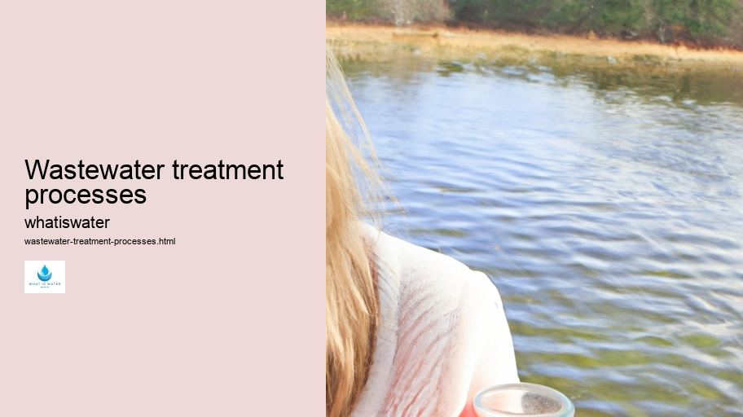
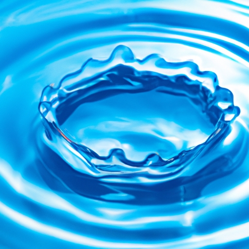

Hydrological Cycle
Hydrological Cycle
Evaporation and transpiration
Condensation and cloud formation
Precipitation and rain patterns
Surface runoff and river systems
Groundwater flow and aquifers
Snowmelt and glacial processes
Water storage in oceans lakes and reservoirs
Soil moisture and infiltration
Water balance and budgeting
Human impact on the hydrological cycle
Marine Ecosystems
Marine Ecosystems
Coral reefs and their biodiversity
Mangrove forests as coastal protectors
Ocean currents and climate regulation
Deepsea habitats and extremophiles
Intertidal zones and estuarine ecosystems
Marine food webs and trophic levels
Freshwater Ecosystems
Freshwater Ecosystems
Conservation efforts for marine species
Marine biogeochemical cycles
Impact of global warming on oceans
Water Resource Management
Water Resource Management
Rivers streams and creeks ecosystems
Lakes ponds wetlands habitats
Biodiversity in freshwater environments
Aquatic plants role in oxygenation
Freshwater fish species diversity
Invasive species impact on freshwater systems
Pollution threats to freshwater sources
Conservation strategies for freshwater biomes
Role of wetlands in flood control
Importance of riparian buffers
Cultural Significance of Water
Cultural Significance of Water
Sustainable water use practices
Desalination technologies for fresh water supply
Wastewater treatment processes
Rainwater harvesting techniques
Management of water during drought conditions
Transboundary water resource politics
Infrastructure for water distribution
Agricultural irrigation efficiency
Urban water demand management
Impact of climate change on water resources
About Us
Contact Us

Wastewater treatment processes
Groundwater
Wastewater treatment is an essential process that involves the removal of contaminants from water after it has been used. This practice ensures that the water can be safely released into the environment or reused in various applications.
Wastewater treatment processes - Groundwater
Waterborne Diseases
Water Filtration
Water Law and Policy
Water Scarcity
The treatment processes are designed to address both organic and inorganic materials, as well as microorganisms that might pose health risks.
The initial phase of wastewater treatment is known as pretreatment or primary treatment. Here, large solids and grit are removed through screening and sedimentation techniques.
Wastewater treatment processes - Water Management
Water Sports and Recreation
Waterborne Diseases
Water Filtration
Water Law and Policy
Screens capture big objects like rags, sticks, and other debris, while settling tanks allow heavier particles to sink to the bottom for removal.
Secondary treatment follows, primarily focusing on reducing organic material usually measured by biological oxygen demand (BOD). This stage employs bacteria and other microorganisms that consume organic waste as food in a controlled environment. Aeration systems supply these organisms with the necessary oxygen to thrive and decompose the waste efficiently.
In some cases, tertiary treatment is applied for further purification. This advanced step removes residual nutrients such as nitrogen and phosphorus which could lead to eutrophication if discharged into natural water bodies. Methods include chemical precipitation, filtration, and additional biological processes.
Finally, disinfection is performed to eliminate pathogenic bacteria and viruses that may still be present. Chlorination is a common method but alternatives like ultraviolet light or ozone treatments are increasingly popular due to concerns about chemical residuals.
Sludge produced during wastewater treatment undergoes its own series of treatments since it contains a high concentration of pollutants. Digestion processes stabilize the sludge by breaking down organic matter into more stable substances. Afterward, dewatering reduces its volume before disposal or use as fertilizer under controlled conditions.
Groundwater
Wastewater treatment technologies continue evolving with advancements aimed at increasing efficiency, reducing energy consumption, and recovering resources from waste streams. Innovations encompass membrane bioreactors which combine secondary and tertiary treatments effectively in one step; constructed wetlands imitate natural purification processes; while resource recovery initiatives focus on reclaiming water, nutrients, or even energy from wastewater.
In conclusion, wastewater treatment plays a crucial role in protecting public health and preserving environmental quality. Through multiple stages—primary through potentially tertiary—contaminants are methodically removed or transformed ensuring safe discharge or reuse of treated water thus closing the loop within our hydrological cycle responsibly.

Hydrological Cycle
Rainwater harvesting techniques
Check our other pages :
Condensation and cloud formation
Invasive species impact on freshwater systems
Role of wetlands in flood control
Ocean currents and climate regulation
Coral reefs and their biodiversity
Frequently Asked Questions
What are the main stages of wastewater treatment?
The main stages of wastewater treatment are typically divided into three levels: primary, secondary, and tertiary. Primary treatment involves the removal of large solids and sedimentation of settleable organic and inorganic materials. Secondary treatment uses biological processes to degrade dissolved and suspended organic compounds. Tertiary treatment further purifies the water through advanced methods such as filtration, disinfection, nutrient removal, or other specialized processes to meet specific standards before discharge or reuse.
How do microorganisms contribute to wastewater treatment?
Microorganisms play a crucial role in the secondary stage of wastewater treatment by breaking down organic matter in the water. Bacteria, protozoa, fungi, and other microbes consume organic pollutants as food, converting them into carbon dioxide, water, and biomass through aerobic or anaerobic processes. This biological degradation is enhanced in systems like activated sludge, trickling filters, and biofilm reactors.
What is the purpose of sludge treatment in wastewater management?
Sludge treatment is an essential part of wastewater management because it deals with the byproduct generated from primary and secondary treatments. The purpose is to reduce volume, stabilize organic material (reducing odor and pathogen content), dewater to decrease transportation costs for disposal or reuse options like land application as fertilizer after further processing which might include digestion (anaerobic or aerobic), composting or incineration.
Why is disinfection important in wastewater treatment?
Disinfection is a critical step in wastewater treatment aimed at eliminating pathogens that can cause diseases if released into the environment or reused. It ensures public health safety by using chemical agents like chlorine or physical methods such as ultraviolet light to kill harmful bacteria, viruses, and parasites present in treated effluent before discharge into natural water bodies or recycling for irrigation or industrial use.